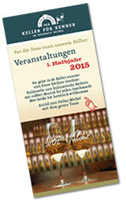

Weinselige Termine, die Sie nicht verpassen sollten
Februar |
|
Sa., 28.02.2015
|
Ein Abend mit Hildegard Knef – Der geschenkte GaulHildegard Knef, Filmstar, Chansonsängerin und Deutschlands heißester Nachkriegsexport, hat ein bewegtes Leben geführt. In ihrer Biografie „Der geschenkte Gaul“ erzählt die Künstlerin spannend und mit ihrem umwerfenden Berliner Witz vom Schauspielunterricht an der Filmschule Babelsberg, von der UFA, von Kriegswirren und von ihrem Opa, von Hollywood und von ihrer Rückkehr nach Deutschland, wo sie, laut Ella Fitzgerald die „beste Sängerin ohne Stimme“, mit ihren unvergleichlichen Chansons eine zweite Karriere startete. Christine Eckert liest aus dem „Geschenkten Gaul“ und singt Knef-Chansons. Begleitet wird sie von Christiane Bühler am Klavier und Andrea Steinle am Cello. Eintritt: 12,00 € Gänsehaut pur! |
März |
|
Fr., 13.03.2015
|
Leonard Cohen
|
Do., 26.03.2015
|
HuubDutch Duo – „Jetzt kübelt’s!“Swingende Klassiker und charmante Chansons aus eigener Feder – mal fetzig, mal romantisch, mit schlitzohrigen, intelligenten Texten. Wer allen Ernstes „Wäscheleinophon“ spielt, ist entweder an traditionellen Instrumenten gescheitert oder so musikalisch begabt, dass er ein eigenes Instrument erfinden kann. HuubDutch ist definitiv Letzteres. Er braucht nur an seiner Wäscheleine zu zupfen, mit den an einen Schuh geschnürten Maracas zu rasseln und mit seiner „verbrauchten“ Stimme, wie sie so typisch für Sänger wie Ray Charles ist, zu singen und schon fügt sich alles zu Musik zusammen. www.huubdutchduo.de Eintritt: 12,00 € Kleine Besetzung – große Show! |
Fr., 27.03.2015
|
2015 – Die Streiche von Max und Moritz werden 150!Max und Moritz got the Blues
|
April |
|
Fr., 17.04.2015
|
Michels „Internett“ WWW –Weck-Worscht-Woi
|
Mi., 22.04.2015
|
„Noch’n Gedicht“ – ein Porträt des großartigen Humoristen Heinz ErhardtÜber 30 Jahre ist er nun schon tot, aber Heinz Erhardt ist heute noch ein bekannter und beliebter Kabarettist, Dichter, Musiker und Entertainer. „Die Dichterpflänzchen“ präsentieren Gedichte, Anekdoten und Auszüge aus seiner Autobiografie. www.dichterpflaenzchen.com Lesung: 7,00 € |
Mai |
|
Do., 30.04. - |
Tipp!4. Mainzer Weintage vom 30. April bis 3. Mai 2015Besuche Se unsern Stand am Rhoiufer. Sie finne die Michels unn ihr Team direkt hinner de Theodor-Heuss-Brück. |
Mi., 06.05.2015
|
Fluglärm als Krimi – Lesung mit Gerd FischerDer Krimi „Fliegeralarm“ widmet sich der Fluglärm-Problematik im Rhein-Main-Gebiet und erzählt eine fiktive Geschichte. Ein Mann wird entführt. Sein Ohr landet auf dem Tisch der Frankfurter Kripo zusammen mit der Forderung, die neue Landebahn wieder stillzulegen. Der Krimi verfolgt zudem die heikle Frage, wie weit Bürger gehen würden, wenn sie den Fluglärm nicht mehr ertragen können und sich gegen die Macht der Wirtschaft und der Politik wehren wollen. Das Buch verknüpft Realität und Fiktion, denn es präsentiert den Lesern einige historische Ereignisse bis zurück ins Jahr 1987 an der Startbahn West. Wie immer in den Krimis von Gerd Fischer mit Kommissar Rauscher kommen der Ebbelwoi, der Lokalkolorit und auch der Humor nicht zu kurz. Eintritt: 5,00 € |
September |
|
Mi., 02.09.2015
|
"Eine Socke voller Liebe" Monika Beer liest aus ihrem RomanDie Autorin ist selbst den achthundert Kilometer langen Jakobsweg gepilgert. Sie hat ihre Erlebnisse und Erfahrungen in diesem Buch verarbeitet. Zwei Freundinnen pilgern den achthundert Kilometer langen Jakobsweg von den Pyrenäen bis Santiago de Compostela. Beide stehen vor wichtigen Entscheidungen. Sabine will sich von ihrem alkoholkranken Mann trennen. Andrea hat Probleme mit dem Alleinsein. Jeder Wandertag hält unerwartete Ereignisse bereit. Die Begegnungen mit anderen Menschen und viele Gespräche lösen Erinnerungen an die bewegte Vergangenheit der Pilgerinnen aus. Der Weg stellt ihnen Fragen: "Wer bin ich?", "Was will ich?" und "Was hat Gott damit zu tun?". So wird das Unterwegssein nicht nur zu einer körperlichen Herausforderung, sondern zu einer wunderbaren, Kraft bringenden Erfahrung voller Lebensfreude. www.monikabeermainz.jimdo.com Lesung: 7,00 € |
Fr., 11.09.2015
|
"Kraftvoll im Abgang", inspiriert von einer Kurzgeschichte Roald Dahls Integriert in das Theaterstück ist eine kleine Weinprobe mit 3 WeinenWir erleben Silke und Robert in einer prekären Situation: bei einem Gourmetessen verwettet Robert eine Nacht mit seiner Frau Silke. Unfassbar, unverschämt, findet Silke. Noch dazu, da der Kontrahent ein großer Weinkenner und obendrauf ein ziemliches Ekel ist. Aber je länger Silke darüber nachdenkt, beginnt sie Geschmack an der Sache zu finden… Erleben Sie den Parforceritt dieses seltsamen Paares und werden Sie Teil einer prickelnden Wette – ohne selbst mit agieren zu müssen. Es spielen: Angela Eickhoff und Boris Ben Siegel Eintritt: 23,00 € |
Do., 24.09.2015
|
Max und Moritz got the Blues Swingende Streiche – fabelhaft vertontSo haben Sie Wilhelm Buschs "Max und Moritz" noch nie gehört. Genial vertont und mitreißend vorgetragen. Jeder Streich ist ein Erlebnis: überraschende Wendungen, einprägsame Melodien, effektvolle Stimm-Arrangements, fesselnde Trompetensoli und Groove! Groove! Groove! HuubDutch und Chris Oettinger führen ihr Publikum durch viele musikalische Genres mit einem phantastischen Gespür für die erzählerischen Wendungen und den einmaligen Sprachwitz der Bubengeschichten von Witwe Bolte über Lehrer Lämpel bis hin zu Meister Müllers gefräßigem Federvieh. Eintritt: 15,00 € Atemberaubend und unbedingt hörenswert! |
Oktober |
|
Mi., 07.10.2015
|
Drei auf einen Streich. Die Schack-Bekker-ErzählungenPeter Jackob liest – ein spannender Genuss!Schack Bekker ermittelt wieder: War die Suppe seines Tischnachbarn im Restaurant vergiftet? Hat der lauffaule, beißwütige Dackel seines Freundes Niesberg tatsächlich den richtigen Riecher bei einem kaltblütigen Mord? Und was hat Bekkers Enkeltochter beim Besuch einer Tiger-Fütterung im Käfig aufblitzen sehen? Freuen Sie sich auf einen spannenden und unterhaltsamen Abend mit dem Mainzer Altstadtkommissar. Lesung: 7,00 € |
Fr., 23.10.2015
|
MON MARI ET MOI: »verbesserte RezepTOUR: Chansons und Lieblingslieder!«MON MARI ET MOI, mein Mann und ich: Zwei Paare, am selben Tag geheiratet und dann noch den gleichen Musikgeschmack: Skurrile, melancholische, leidenschaftliche, leise und laute deutschsprachige Chansons von Hildegard Knef, Marlene Dietrich, Zarah Leander, Jaques Brel und vermehrt auch eigene Titel. Man wird viele, zu Unrecht in Vergessenheit geratene Lieder hören - Chanson-Kenner dürfen sich überraschen lassen! Shakti Paqué (Gesang/Memotron/Pianica), Mathias Paqué(Gitarre), Inge Mrotzek (Bass), Jürgen Mrotzek (Schlagzeug/Percussion) Eintritt: 12,- € |
Fr., 30.10.2015
|
"Die dunkle Seite der Seele - Ein Abend mit Edgar Allan Poe u.a."Gebrochene Charaktere, obsessive Begierden, intellektuelle Mordlust – Geschichten, die uns lustvoll Gruseln lassen und uns manchmal das Fürchten lehren. Eine szenische Lesung, die auch Lust macht auf das Wieder- oder Neuentdecken großer Autoren, die sich mit der dunklen Seite der Seele, geheimen Verlangen und obskuren Erscheinungen beschäftigt haben. Dazu präsentiert Ihnen das Weinhaus Michel schaurig-leckere Herbstspezialitäten. Lesung: 7,00 € |
November |
|
Do., 05.11.2015
|
"Bis Binge ging´s jo!"Hildegard Bachmann erzählt hier auf "Hochdeutsch" von ihren Reiseerlebnissen, die sie bei ihren Besuchen im Ausland - meist in Asien - bei ihrer Schwester erlebt hat. Lustige, unglaubliche Erlebnisse über Land und Leute. Lesung: 10,00 € |
Mi., 11.11.2015
|
HELAU! Heit geht die Fassenacht los!Mer feiern den Start in die Kampagne im Gewölbekeller. Beschwingt in die Fassenachtssaisong – und des midde in de Woch - mit handgemixder Musick vum Stefan. Mer freue uns auf Euch!! Eintritt frei |
FR., 27.11.2015
|
"Was gibt es Neues, Herr Weihnachtsmann?"Wer das ganze Jahr artig ist, kann vom Weihnachtsmann gewöhnlich viele gute Gaben erwarten. Wem aber wie Hildegard Bachmann und Jürgen Finkenauer regelmäßig der Schalk im Nacken sitzt, muss schon besonders freundlich zum Weihnachtsmann sein, um zu gefallen. Erleben Sie eine heitere, besinnliche und musikalische Begegnung mit dem Mann, dem man alle Jahre wieder tief in die Augen schauen muss. Freuen Sie sich auf Texte, Anekdoten und Gesang mit Hildegard Bachmann und Flaneur Jürgen Finkenauer. www.hildegard-bachmann.de Eintritt: 15,00 € |
Download Flyer 1. Halbjahr 2015
 Download Flyer 2. Halbjahr 2015
Download Flyer 2. Halbjahr 2015
„Bei uns unne im Keller finne Se Woi unn Kuldur discht beienanner.
Aach des leiblische Wohl kimmt hier net zu kurz."
Karten für alle Veranstaltungen erhalten Sie bei uns im Weinhaus.
Gerne reservieren wir Ihnen Ihre Termine telefonisch, die Karten sollten jedoch bitte eine Woche vor Veranstaltung bei uns im Weinhaus abgeholt werden.
Schauen Sie doch immer mal wieder auf unsere Webseite, hier finden Sie die aktuellen Termine und viele Informationen.
Ach übrigens:
Ob mit 30 oder 60 Personen, im historischen Gewölbekeller lässt es sich wunderbar feiern. Geburtstage, Hochzeiten, Geschäftsessen, Seminare oder Weihnachtsfeiern – in den Mauern des ehemaligen Klosters Jakobsberg fühlt man sich rundum wohl.
Sprechen Sie uns an, wir beraten Sie gerne.
* Einlass ist eine Stunde vor Veranstaltungsbeginn. Es werden bereits Getränke und Speisen serviert.